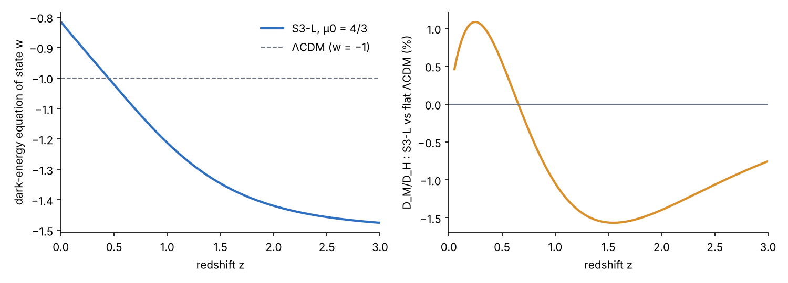

Gravity as generative measurement
A dark-energy law with no extra parameter
The essay proposes that a fraction of the Hubble horizon is progressively "inscribed":
f = 1 − exp[ −μ0 (H0/H)³ ]
and that each inscription weighs when it is made, then dilutes as 1/a. This law, S3-L, has a single constant, μ0, which replaces ΩΛ: for the expansion history it has exactly as many parameters as the standard model. Fitted to DESI DR2 and Planck, μ0 = 1.305 ± 0.016. The form of the law is posed, not derived, and was chosen after seeing the data. Against ΛCDM it gives a weak preference, not a win.
One bet, judged from 2027
μ0 = 4/3 exactly. With the counting convention of the interpretation (a cell is a Planck area, one unit of information per four cells) and the hypothesis that our horizon reaches the size of the source today, the law has no free parameter at all. It then imposes Ωm = 0.3123 and a precise shape of cosmic distances.
It is compatible with current data (about 1.4σ). It is refuted if final DESI and Euclid find Ωm incompatible with 0.3123 at more than 3σ. The convention was fixed while knowing the data: a fragile bet, not a derivation.

s3l_check.py.Where it stands
| Point | Status |
|---|---|
| Weak point: S8 | Predicted 0.850 (frozen); DES Y6 measures 0.789 ± 0.012, already below the refutation threshold 0.798 set in advance. Euclid decides in 2027. |
| Inflation | Starobinsky with the retained reheating (chosen after the fact): ns = 0.9618, r = 0.0042, about 4σ below ACT DR6 for ns. |
| Laboratory | A classical gravity that records: no gravitationally induced entanglement (BMV experiments). |
| Open track | (M/MP)³ = v/MP links the scalaron mass, the Higgs vacuum value and the Planck mass, giving G at 0.89–0.92 of its measured value. One form out of about twenty falls in the window (chance 7–15 %): undecided. |
Method
Every test (numbered 1 to 440) is pre-registered: expected results are written and fingerprinted (sha256, freeze time) before the code runs, and failures are published alongside successes, in a separate document of discarded leads.
Read, check, criticize
Short note, 3 pages (Zenodo) Essay and full archive (Zenodo) Code and predictions (GitHub)
The reference text is the short essay in French; an English short paper is in the same deposit.